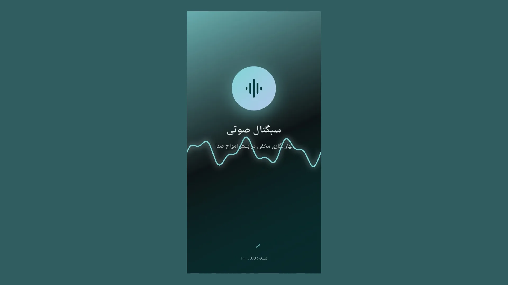
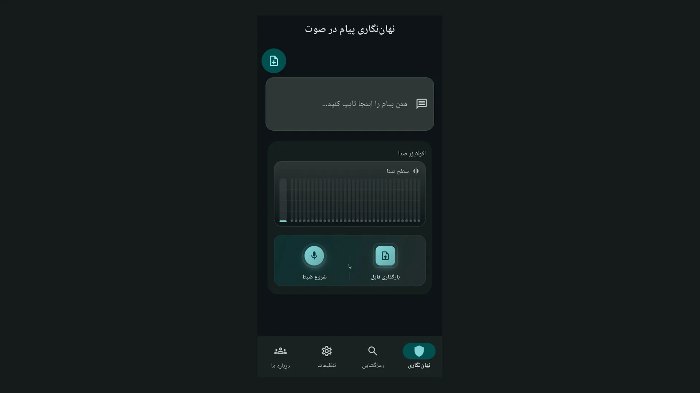
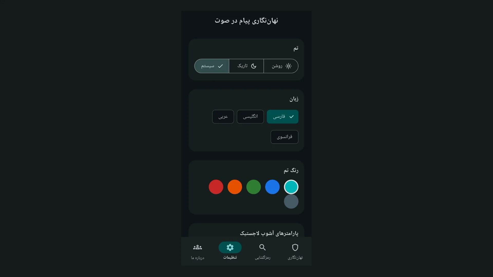
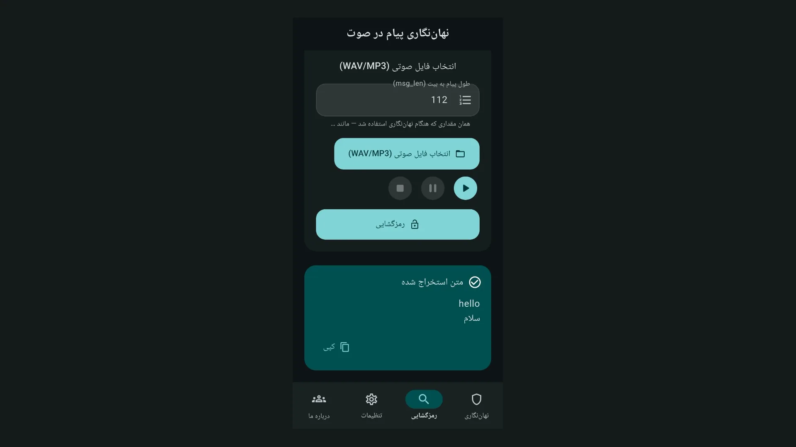
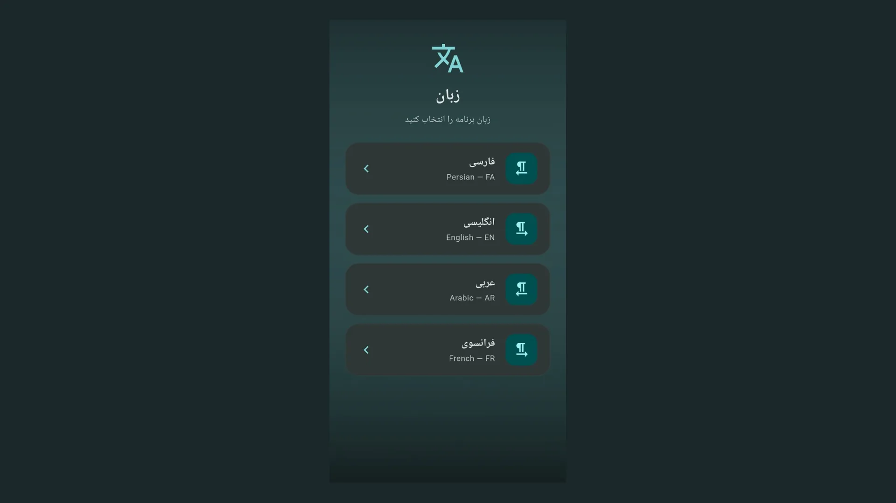
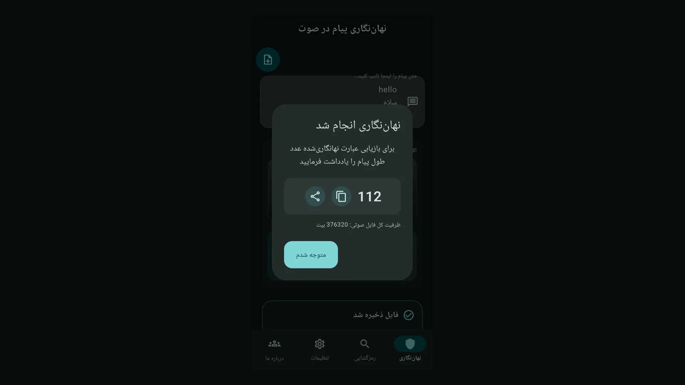

کلمات کلیدی: نهاننگاری صوتی، صوتنهان، آموزش نرمافزار، LSB، نقشه آشوب لاجستیک، اپلیکیشن اندروید، استگانوگرافی
صوتنهان اپلیکیشن اندروید برای نهاننگاری صوتی است. پیام متنی شما داخل موج صدا پنهان میشود. بازیابی با همان کلید و طول پیام ممکن است. پردازش فقط روی دستگاه انجام میشود.
در دنیای امنیت اطلاعات، استگانوگرافی یعنی پنهان کردن وجود پیام است. رمزنگاری محتوا را غیرقابل خواندن میکند. نهاننگاری خود پیام را در رسانه دیگری مخفی میکند. صوتنهان این ایده را روی فایل صوتی پیاده میکند.
این نرمافزار بخشی از پژوهش پایاننامه «نهاننگاری مخفی سیگنال صوتی با نگاشت آشوب لاجستیک» است. توسعهدهنده علیرضا کاروی و شرکت NTK پشتیبان فنی پروژه هستند. جزئیات فنی در مخزن GitHub منتشر شده است.
اگر به پردازش سیگنال و اپلیکیشنهای مرتبط علاقه دارید، XWave منبع مقالات تکمیلی است. در بخش اپلیکیشنهای XWave نرمافزارهای مشابه را میبینید.

نسخه اندروید صوتنهان با شناسه ir.ntk.audiowmark.app در فروشگاه مایکت منتشر شده است. نصب از منبع رسمی توصیه میشود. روی بنر زیر بزنید تا به صفحه دانلود بروید.
برای مطالعه بیشتر درباره پردازش موج صوتی و پروژههای NTK به xwav.ir سر بزنید. این پست نیز بخشی از محتوای آموزشی همان مجموعه است.
الگوریتم LSB کمارزشترین بیت هر نمونه PCM را برای جاسازی بیت پیام استفاده میکند. تغییرات آنقدر کوچک است که گوش انسان اختلاف را نمیشنود. کیفیت شنیداری حفظ میشود.
کلید تصادفی از نقشه آشوب لاجستیک ساخته میشود. پارامترهای seed، r و x0 جریان بیت کلید را تعیین میکنند. بدون این سه مقدار و بدون طول پیام به بیت، استخراج ممکن نیست.
متن ورودی ابتدا به UTF-8 و سپس به جریان بیت تبدیل میشود. هدر ۳۲ بیتی طول پیام نیز در جریان قرار میگیرد. خروجی نهایی فایل WAV با نمونهبرداری PCM 16-bit است.
نسخه فعلی از Autoencoder برای تقویت مقاومت پیام استفاده میکند. این لایه اضافی خطاهای احتمالی را کاهش میدهد. جزئیات در مستندات GitHub توضیح داده شده است.
رابط کاربری به چهار زبان فارسی، انگلیسی، عربی و فرانسوی در دسترس است. تم روشن و تاریک برای استفاده روز و شب مناسب است. رنگ accent قابل تنظیم است.
چهار تب اصلی دارد: نهاننگاری، رمزگشایی، تنظیمات و درباره ما. راهنمای سریع در اولین اجرا نمایش داده میشود. آیکن سؤال در نوار بالا راهنمای کامل را باز میکند.
پس از نهاننگاری، متریکهای SNR، PSNR، BER، NPCR و UACI محاسبه میشوند. روی هر متریک بزنید تا توضیح فارسی آن را ببینید. این شاخصها کیفیت جاسازی را عددی نشان میدهند.
دکمه «تأیید فوری» پیام را بلافاصله استخراج و با متن اصلی مقایسه میکند. قبل از ارسال فایل به دیگران، از موفقیت embed مطمئن شوید.


در آموزش امنیت سایبری، دانشجو با صوتنهان مفهوم استگانوگرافی را عملی میبیند.
تفاوت رمزنگاری و نهاننگاری برای او در همان لحظه ملموس میشود.
پژوهشگران میتوانند پارامترهای آشوب را تغییر دهند. اثر r و x0 روی BER و SNR را در همان لحظه مشاهده کنند. این برای پایاننامه و مقاله مفید است.
کاربر عادی میتواند پیام کوتاه را داخل یک فایل صوتی شخصی پنهان کند. فایل شبیه یک WAV معمولی به نظر میرسد. فقط گیرنده با اطلاعات کلید پیام را میخواند.
توجه کنید این ابزار برای پژوهش و آموزش طراحی شده است. استفاده غیرقانونی یا نقض حریم دیگران مجاز نیست. مسئولیت استفاده با کاربر است.
تمام پردازش صدا و متن روی گوشی شما انجام میشود. در نسخه فعلی ارسال خودکار به سرور وجود ندارد. فایلها بدون اجازه شما خارج از دستگاه نمیروند.
مجوز میکروفن فقط برای ضبط صدا در تب نهاننگاری لازم است. مجوز دسترسی به فایل صوتی برای انتخاب WAV یا MP3 از حافظه است. توضیح این مجوزها در فرم انتشار مایکت ثبت شده است.

همیشه عدد طول پیام (بیت) را همراه پارامترهای کلید یادداشت کنید. بدون این عدد رمزگشایی غیرممکن است. آن را در یادداشت امن یا پیام جداگانه به گیرنده بدهید.
فایل WAV خروجی را دوباره فشرده نکنید. ارسال بهصورت «پیام صوتی» در واتساپ یا تلگرام داده نهان را خراب میکند. حتماً فایل را بهصورت سند/پیوست بفرستید.
طول پیام و ظرفیت صوت محدود است. اگر پیام طولانی است، فایل صوتی بلندتر انتخاب کنید. اپ در صورت کمبود ظرفیت هشدار نشان میدهد.
پارامترهای r و x0 باید در هر دو طرف embed و extract یکسان باشند. کوچکترین تغییر در x0 کلید را کاملاً عوض میکند.


علاوه بر اندروید، نسخه Flutter برای Windows و Linux در مخزن GitHub موجود است. نسخه WPF دسکتاپ با .NET 10 نیز توسعه یافته است. رفتار الگوریتم در همه کلاینتها یکسان است.
برای استفاده روزمره روی گوشی، نسخه مایکت کافی است. برای آزمایش روی PC میتوانید مخزن را clone کنید. دستور build در README مخزن آمده است.
در این بخش فرض میکنیم اپ را از مایکت نصب کردهاید. هر مرحله را به ترتیب انجام دهید. در پایان یک پیام نمونه را پنهان و بازیابی میکنید.
لینک مایکت را باز کنید و «نصب» را بزنید. پس از نصب، آیکن صوتنهان را روی صفحه اصلی پیدا کنید. اولین بار که اپ را باز میکنید، صفحه اسپلش کوتاه نمایش داده میشود.
سپس از شما زبان رابط پرسیده میشود. فارسی را انتخاب کنید یا هر زبانی که راحتید. زبان را بعداً در تب تنظیمات هم میتوانید عوض کنید.

صفحه «راهنمای سریع» ظاهر میشود. هدف اپ و سه گام اصلی را میخواند. دکمه «شروع استفاده» را بزنید تا وارد برنامه شوید.

قبل از اولین نهاننگاری به تب «تنظیمات» بروید. تم روشن یا تاریک را انتخاب کنید. مقادیر پیشفرض seed، r و x0 را ببینید.
اگر با دوست خود هماهنگ میکنید، همین مقادیر را برای هر دو نگه دارید. میتوانید r و x0 را با اسلایدر یا ورود دستی تنظیم کنید. پس از تغییر، از تنظیمات خارج نشوید تا ذخیره شود.
این سه مقدار را در جایی امن یادداشت کنید. همراه «طول پیام به بیت» برای رمزگشایی لازم است. بدون آنها گیرنده پیام را نمیخواند.
به تب «نهاننگاری» برگردید. در کادر بالا متن پیام را بنویسید. مثلاً: «سلام — این یک تست است».
حالا منبع صدا را انتخاب کنید. روش اول: دکمه «شروع ضبط» را بزنید. چند ثانیه در میکروفن صحبت کنید. سپس «پایان ضبط» را بزنید.
روش دوم: «بارگذاری فایل» را بزنید. یک فایل WAV یا MP3 از حافظه انتخاب کنید. فایل باید به اندازه کافی بلند باشد.
پردازش خودکار شروع میشود. چند لحظه صبر کنید. نوار پیشرفت وضعیت را نشان میدهد. در صورت خطا پیام فارسی روی صفحه میآید.
پس از اتمام، پنجره «طول پیام (بیت)» باز میشود. عدد داخل آن را کپی کنید یا یادداشت کنید. این مهمترین قدم آموزش است.

نمودار موج cover و stego را مقایسه کنید. SNR بالاتر یعنی تغییرات کمتر شنیده میشوند. روی هر متریک بزنید تا توضیح آن را بخوانید.
دکمه «تأیید فوری» را بزنید. اگر متن استخراجشده با پیام اولیه یکی بود، embed موفق بوده است. اگر متفاوت بود، ظرفیت یا پارامترها را بررسی کنید.
روی «ذخیره فایل نهاننگاریشده» بزنید. مسیر ذخیره را انتخاب کنید. نام فایل معمولاً با پسوند WAV است.
برای ارسال، از آیکن اشتراکگذاری استفاده کنید. در واتساپ یا تلگرام گزینه «ارسال فایل» یا «سند» را بزنید. گزینه «پیام صوتی» را انتخاب نکنید.
به گیرنده بگویید: فایل WAV، عدد طول بیت، و مقادیر r و x0 و seed را بفرستید. میتوانید seed را در تنظیمات ببینید.
گیرنده اپ را نصب میکند. همان پارامترهای کلید را در تنظیمات وارد میکند. سپس به تب «رمزگشایی» میرود.
«انتخاب فایل صوتی» را بزنید. فایل WAV دریافتی را انتخاب کنید. در اندروید میتوانید از «باز کردن با → صوتنهان» هم استفاده کنید.
عدد «طول پیام (بیت)» را در کادر مربوط وارد کنید. دقیقاً همان عددی که فرستنده داده است. یک رقم اشتباه کل خروجی را خراب میکند.
دکمه «رمزگشایی» را بزنید. متن در کارت «متن استخراجشده» نمایش داده میشود. دکمه «کپی» را بزنید.
اگر متن خالی یا نامفهوم بود، اول طول بیت را چک کنید. بعد r و x0 و seed را با فرستنده مقایسه کنید. کوچکترین اختلاف نتیجه را از بین میبرد.
اگر فایل از پیامرسان آمده، بپرسید بهصورت فایل فرستاده شده یا Voice. Voice معمولاً داده نهان را نابود میکند. فایل اصلی WAV را دوباره بخواهید.
اگر ظرفیت کم بود، پیام کوتاهتر بنویسید یا صدای cover را طولانیتر کنید. هشدار ظرفیت در اپ راهنمایی میکند.
برای کمک بیشتر آیکن «؟» در نوار بالا را بزنید. راهنمای کامل داخل اپ مراحل را تکرار میکند. میتوانید به xwav.ir هم مراجعه کنید.
برای embed جدید، آیکن «نهاننگاری جدید» در بالای تب را بزنید. وضعیت قبلی پاک میشود. پیام و فایل تازه انتخاب کنید.
هر بار embed جدید ممکن است طول بیت متفاوتی بدهد. هر بار عدد تازه را یادداشت کنید. از عدد embed قبلی برای extract جدید استفاده نکنید.
یک پیام کوتاه انگلیسی یا فارسی انتخاب کنید. پنج ثانیه در میکروفن ضبط کنید. embed کنید و عدد بیت را یادداشت کنید. بلافاصله «تأیید فوری» را بزنید.
سپس بدون بستن اپ به تب رمزگشایی بروید. همان فایل را بارگذاری کنید. اگر متن درست آمد، آماده ارسال به دیگران هستید.
این تمرین را با فایل MP3 بارگذاریشده هم تکرار کنید. با تم تاریک و روشن هم آزمایش کنید. با تغییر r آگاهانه ببینید extract چطور fail میشود.
صوتنهان ابزار عملی نهاننگاری صوتی با LSB و نقشه آشوب لاجستیک است. نصب از مایکت، تنظیم کلید، embed، یادداشت طول بیت و extract گامهای اصلی هستند.
برای دانلود از مایکت استفاده کنید. مقالات بیشتر در xwav.ir منتشر میشود.